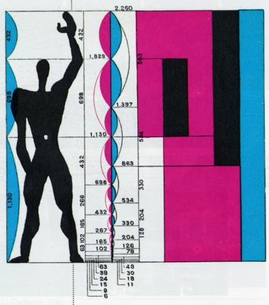

Applications Of Golden Ratio
Architecture
Great Mosque of Kairouan
More topics
Architect Le Corbursier
 Le Corbusier developed the Modulor in the long tradition of Vitruvius, Leonardo da Vinci’s Vitruvian Man, the work of Leone Battista Alberti, and other attempts to discover mathematical proportions in the human body and then to use that knowledge to improve both the appearance and function of architecture. The system is based on human measurements, the double unit, the Fibonacci numbers, and the golden ratio. Le Corbusier described it as a “range of harmonious measurements to suit the human scale, universally applicable to architecture and to mechanical thingsSwiss architect, Mario Botta
 Another Swiss architect, Mario Botta (1943),
is famous for using the golden section in his
work. For example in the house Origlio the
golden ratio is the proportion between the
central section and the side sections of the
house.
The CN Tower in Toronto (1974) is
interesting. The height of once the world’s
tallest tower is 553.33 m, and the height of the
glass floor is 342 m. The proportion of these
two values is 1.617924- the golden ratio.
Another Swiss architect, Mario Botta (1943),
is famous for using the golden section in his
work. For example in the house Origlio the
golden ratio is the proportion between the
central section and the side sections of the
house.
The CN Tower in Toronto (1974) is
interesting. The height of once the world’s
tallest tower is 553.33 m, and the height of the
glass floor is 342 m. The proportion of these
two values is 1.617924- the golden ratio.
Ancient Egypt
Today there are many theories about the Great Pyramid of Giza (c. 2570 BC). Many of them claim that Egyptian designers used the golden proportion in the construction of the Great Pyramid. It can be measured that the ratio of the slant height of the pyramid to half the length of the base as 612.01 (feet)/377.9 (feet) = 1.6195 is the golden ratio. But, this is not proof that the Egyptians intentionally used the golden ratio. We don’t know the real measures of the pyramid; it was partially ruined by taking off the paneling. And also there is no written evidence about the design and the building of the pyramid.Taj Mahal
 From ancient Greek architecture and Egyptian pyramids to the Taj Mahal and the UN Secretariat Building, the golden ratio has been a primarily important part of architecture across ages. Considering that the ratio is meant to be the most pleasing of all proportions, this fact doesn’t come as a surprise. It has been an integral element of our architectural past, is an important aspect of our architectural present and shall remain a significant characteristic of our architectural future.
From ancient Greek architecture and Egyptian pyramids to the Taj Mahal and the UN Secretariat Building, the golden ratio has been a primarily important part of architecture across ages. Considering that the ratio is meant to be the most pleasing of all proportions, this fact doesn’t come as a surprise. It has been an integral element of our architectural past, is an important aspect of our architectural present and shall remain a significant characteristic of our architectural future.
Gothic
One of the most popular monuments from this period is Notre Dame Cathedral in Paris (built 1163-1346). F. Macody Lung in his book Ad Quadratum (1919) claims that this church, Cathedral of Chartres (early 12th century), the Notre-Dame of Laon (12th -13th century) were designed according to the golden ratio.
related 1
All the companies are also trying to get into the market of Laptops
related 2
All the companies are also trying to get into the market of Televisions
related 3
All the companies are also trying to get into the market of Camera
Use of Golden Ratio in Art
Divine proportion
More topics
Luca Pacioli: Divina Proportione
Pacioli says so more than once. In thebook we found particularly interesting examination of woodcuts in which Fra Lucabuilds his Alphabeto Dignissimo Antiquo and we had proposals for reproducing somecharacters, chosen on which that reveal the nature of constructive principles. Pacioli’s alphabet is based on the same square and circle construction that had guided LeonBattista Alberti. Pacioli was also in touch with Mantegna’s circle and he could havebeen influenced by Feliciano’s manuscript. It seems likely that he used other alpha-betical sources, for example the manuscript of Damianus De Moille. Pacioli was a littleless dogmatic than his predecessors, using the thickness of the strokes to somewhat ease the distortions involved in fitting letters like the N, R and H into a perfectly squarescaffold. His letters are calligraphic rather than epigraphic; Pacioli drops the pre-tence that these constructions are faithful copies of the Roman Capital letters. Pacioliattributes the idea of the square and the circle construction to Vitruvius and he does not offer hints as to how the geometric construction was applied to artistic letteringThe Sacrament of the Last Supper
The painting synthesizes centuries of tradition of Pythagorean symbolic Mathematics. It is a watermark based on the golden ratio, but making the viewer not appreciate it at first glance. In 1947’s sketch, it can be noticed the geometric accuracy of the analysis done by Dalí based on the Pythagorean mystic staff, which is a five-pointed star drawn with five straight strokes: You can see that Gala, in the centre of the painting, is enclosed in a regular pentagon and her proportions are according the golden ratio. The picture depicts Leda, the mythological queen of Sparta, with a swan suspended behind her left. There also are a book, a set square, two stepping tools and a floating egg.Jan Tschichold
According to Jan Tschichold There was a time when deviation from the truely beautiful pafge proportions 2:3, 1:sqrt(3), and the Golden section were rare. Many books produced between 1550 and 1770 show these proportions exactly, to within half a millimeter. On the other hand Pablo Tosto listed over 350 works by well-known than 100 which have canvasses with golden rectangle and root-5 proportions.
related 1
All the companies are also trying to get into the market of Laptops
related 2
All the companies are also trying to get into the market of Televisions
related 3
All the companies are also trying to get into the market of Camera
Nature
Messier 83
More topics
Aloe polyphylla
Aloe polyphylla, also known as spiral aloe, naturally grows in this distinctive spiral shape.Fiddleheads
The curled up fronds of a young fern are known as fiddleheads.Ocean Waves
Despite their tumultuous nature, ocean waves are another example of the golden ratio manifesting in nature.Snail shells
Snail shells are a lovely example of the golden ratio in nature.curly flower petals
There are many golden ratios among these curly flower petals.
related 1
All the companies are also trying to get into the market of Laptops
related 2
All the companies are also trying to get into the market of Televisions
related 3
All the companies are also trying to get into the market of Camera
Religion
Hindu Temple
More topics
Shree Yantra
The base angle of the largest trinalges of most representations of Sri Yantra are about 52 degrees, close to the base angle of the Great Pyrmaid of Cheops, which is 51deg50'. With such a base angle, the ratio of the hypotenuse to half the base is phi, the Golden Ratio.Africa
Africa’s golden ratio exemplars predate the instances that create the current origin story. Specifically, I introduce perspectives that suggest that the structures derived from the golden ratio that organize typographic compositions and even structure living spaces also has presence in traditional African architecture, and that this presence extends further back than sites and artifacts in Greece Follow the Golden Ratio from Africa to the Bauhaus for a Cross-Cultural Aesthetic for Images.Temple of Karnak
Great Pyramid of Ghiza or the so-called Pyramid of Cheops. Peter Tompkins' investigative research reveals the design framework of the Great Pyramid. From his work, one finds that the shape of the Pyramid incorporates the fundamental proportions of the golden section. Moreover, Jay Kappraff shows where the Fibonacci Series, which devolves from the golden section, reflects the height of the Pyramid. For a right triangle of one, the square root of phi and phi make up the "perfect" phi pyramid.
related 1
All the companies are also trying to get into the market of Laptops
related 2
All the companies are also trying to get into the market of Televisions
related 3
All the companies are also trying to get into the market of Camera